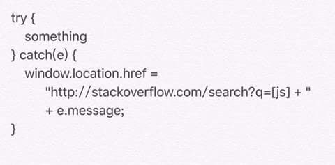

Javascript and PHP Expert
Hello there! My name is Gaurav Kumar Singh - a 28 year old having 5+ years of experience in backend & front-end developer . I primarily design & develop websites, but also enjoy working on user interfaces for web and Mobile application. Form the past 2.7 years I have been working as a team lead and senior developer at Aeonlogiciel while also doing my MCA from SMU (Distance education) . I am a self-taught developer, learning how to code from looking at websites online and learning many programming books. I have a strong grasp at what I am doing and always try to out-do my last project. To cut to the chase, I can develop good front end and backend and can deliver the application with in timeline. I'm a honest individual who is very helpful and likes to build strong relationships with the people I work with. Please feel free to contact me at gaurav.kr.singh1@gmail.com

I have a good knowledge in HTML,CSS,PHP ,JavaScript , jQuery, Titanium, LESS , Symfony2 ,Laravel,Doctrine,Mysql and Angular Js that
allows me to build well structured, attravtive websites. I also work with Titanium to develop cross platefiom Mobile application
IF YOU LIKE MY PROFILE , PLEASE SHARE IT!